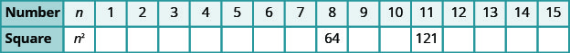
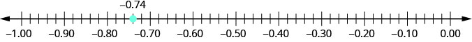
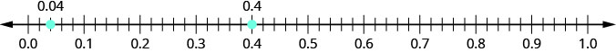
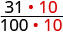
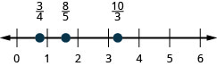
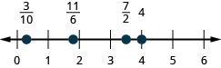
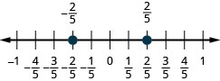
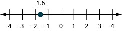

The Real Numbers
Simplify Expressions with Square Roots
Remember that when a number n is multiplied by itself, we write and read it “n squared.” The result is called the square of n. For example,
Similarly, 121 is the square of 11, because is 121.
Complete the following table to show the squares of the counting numbers 1 through 15.

The numbers in the second row are called perfect square numbers. It will be helpful to learn to recognize the perfect square numbers.
The squares of the counting numbers are positive numbers. What about the squares of negative numbers? We know that when the signs of two numbers are the same, their product is positive. So the square of any negative number is also positive.
Did you notice that these squares are the same as the squares of the positive numbers?
Sometimes we will need to look at the relationship between numbers and their squares in reverse. Because we say 100 is the square of 10. We also say that 10 is a square root of 100. A number whose square is is called a square root of m.
Notice also, so is also a square root of 100. Therefore, both 10 and are square roots of 100.
So, every positive number has two square roots—one positive and one negative. What if we only wanted the positive square root of a positive number? The radical sign, denotes the positive square root. The positive square root is called the principal square root. When we use the radical sign that always means we want the principal square root.
We also use the radical sign for the square root of zero. Because Notice that zero has only one square root.
Since 10 is the principal square root of 100, we write You may want to complete the following table to help you recognize square roots.

Simplify: ⓐ ⓑ
Solution
Solution
|
ⓐ
Since |
|
|
ⓑ
Since |
We know that every positive number has two square roots and the radical sign indicates the positive one. We write If we want to find the negative square root of a number, we place a negative in front of the radical sign. For example, We read as “the opposite of the square root of 100.”
Simplify: ⓐ ⓑ
Solution
Solution
|
ⓐ
The negative is in front of the radical sign. |
|
|
ⓑ
The negative is in front of the radical sign. |
Identify Integers, Rational Numbers, Irrational Numbers, and Real Numbers
We have already described numbers as counting numbers, whole numbers, and integers. What is the difference between these types of numbers?
What type of numbers would we get if we started with all the integers and then included all the fractions? The numbers we would have form the set of rational numbers. A rational number is a number that can be written as a ratio of two integers.
All signed fractions, such as are rational numbers. Each numerator and each denominator is an integer.
Are integers rational numbers? To decide if an integer is a rational number, we try to write it as a ratio of two integers. Each integer can be written as a ratio of integers in many ways. For example, 3 is equivalent to
An easy way to write an integer as a ratio of integers is to write it as a fraction with denominator one.
Since any integer can be written as the ratio of two integers, all integers are rational numbers! Remember that the counting numbers and the whole numbers are also integers, and so they, too, are rational.
What about decimals? Are they rational? Let’s look at a few to see if we can write each of them as the ratio of two integers.
We’ve already seen that integers are rational numbers. The integer could be written as the decimal So, clearly, some decimals are rational.
Think about the decimal 7.3. Can we write it as a ratio of two integers? Because 7.3 means we can write it as an improper fraction, So 7.3 is the ratio of the integers 73 and 10. It is a rational number.
In general, any decimal that ends after a number of digits (such as 7.3 or is a rational number. Simply write the decimal as a mixed number.
Write as the ratio of two integers: ⓐ ⓑ 7.31.
Solution
Solution
|
ⓐ
Write it as a fraction with denominator 1. |
|
|
ⓑ
Write it as a mixed number. Remember, 7 is the whole number and the decimal part, 0.31, indicates hundredths. Convert to an improper fraction. |
So we see that and 7.31 are both rational numbers, since they can be written as the ratio of two integers.
Let’s look at the decimal form of the numbers we know are rational.
We have seen that every integer is a rational number, since for any integer, a. We can also change any integer to a decimal by adding a decimal point and a zero.
We have also seen that every fraction is a rational number. Look at the decimal form of the fractions we considered above.
What do these examples tell us?
Every rational number can be written both as a ratio of integers, where p and q are integers and and as a decimal that either stops or repeats.
Here are the numbers we looked at above expressed as a ratio of integers and as a decimal:
| Fractions | Integers | |||||||||
|---|---|---|---|---|---|---|---|---|---|---|
| Number | ||||||||||
| Ratio of Integers | ||||||||||
| Decimal Form | ||||||||||
Are there any decimals that do not stop or repeat? Yes!
The number (the Greek letter pi, pronounced “pie”), which is very important in describing circles, has a decimal form that does not stop or repeat.
We can even create a decimal pattern that does not stop or repeat, such as
Numbers whose decimal form does not stop or repeat cannot be written as a fraction of integers. We call these numbers irrational.
Let’s summarize a method we can use to determine whether a number is rational or irrational.
Given the numbers list the ⓐ rational numbers ⓑ irrational numbers.
Solution
Solution
|
ⓐ
Look for decimals that repeat or stop. |
The 3 repeats in .
The decimal 0.47 stops after the 7. So and 0.47 are rational. |
|
ⓑ
Look for decimals that neither stop nor repeat. |
has no repeating block of digits and it does not stop. So is irrational. |
For each number given, identify whether it is rational or irrational: ⓐ ⓑ
Solution
Solution
- ⓐ Recognize that 36 is a perfect square, since So therefore is rational.
- ⓑ Remember that and so 44 is not a perfect square. Therefore, the decimal form of will never repeat and never stop, so is irrational.
We have seen that all counting numbers are whole numbers, all whole numbers are integers, and all integers are rational numbers. The irrational numbers are numbers whose decimal form does not stop and does not repeat. When we put together the rational numbers and the irrational numbers, we get the set of real numbers.
All the numbers we use in elementary algebra are real numbers. Figure 1 illustrates how the number sets we’ve discussed in this section fit together.

Can we simplify Is there a number whose square is
None of the numbers that we have dealt with so far has a square that is Why? Any positive number squared is positive. Any negative number squared is positive. So we say there is no real number equal to
The square root of a negative number is not a real number.
For each number given, identify whether it is a real number or not a real number: ⓐ ⓑ
Solution
Solution
- ⓐ There is no real number whose square is Therefore, is not a real number.
- ⓑ Since the negative is in front of the radical, is Since is a real number, is a real number.
Given the numbers list the ⓐ whole numbers ⓑ integers ⓒ rational numbers ⓓ irrational numbers ⓔ real numbers.
Solution
Solution
- ⓐ Remember, the whole numbers are 0, 1, 2, 3, … and 8 is the only whole number given.
- ⓑ The integers are the whole numbers, their opposites, and 0. So the whole number 8 is an integer, and is the opposite of a whole number so it is an integer, too. Also, notice that 64 is the square of 8 so So the integers are
- ⓒ Since all integers are rational, then are rational. Rational numbers also include fractions and decimals that repeat or stop, so are rational. So the list of rational numbers is
- ⓓ Remember that 5 is not a perfect square, so is irrational.
- ⓔ All the numbers listed are real numbers.
Locate Fractions on the Number Line
The last time we looked at the number line, it only had positive and negative integers on it. We now want to include fractions and decimals on it.
Let’s start with fractions and locate on the number line.
We’ll start with the whole numbers and because they are the easiest to plot. See Figure 2.
The proper fractions listed are We know the proper fraction has value less than one and so would be located between The denominator is 5, so we divide the unit from 0 to 1 into 5 equal parts We plot See Figure 2.
Similarly, is between 0 and After dividing the unit into 5 equal parts we plot See Figure 2.
Finally, look at the improper fractions These are fractions in which the numerator is greater than the denominator. Locating these points may be easier if you change each of them to a mixed number. See Figure 2.
Figure 2 shows the number line with all the points plotted.

Locate and label the following on a number line:
Solution
Solution
Locate and plot the integers,
Locate the proper fraction first. The fraction is between 0 and 1. Divide the distance between 0 and 1 into four equal parts then, we plot Similarly plot
Now locate the improper fractions It is easier to plot them if we convert them to mixed numbers and then plot them as described above:

In Example 9, we’ll use the inequality symbols to order fractions. In previous chapters we used the number line to order numbers.
- a < b “a is less than b” when a is to the left of b on the number line
- a > b “a is greater than b” when a is to the right of b on the number line
As we move from left to right on a number line, the values increase.
Order each of the following pairs of numbers, using < or >. It may be helpful to refer Figure 3.
ⓐ ⓑ ⓒ ⓓ

Solution
Solution
|
ⓐ
is to the right of on the number line. |
|
|
ⓑ
is to the right of on the number line. |
|
|
ⓒ
is to the right of on the number line. |
|
|
ⓓ
is to the right of on the number line. |
Locate Decimals on the Number Line
Since decimals are forms of fractions, locating decimals on the number line is similar to locating fractions on the number line.
Locate 0.4 on the number line.
Solution
Solution
A proper fraction has value less than one. The decimal number 0.4 is equivalent to a proper fraction, so 0.4 is located between 0 and 1. On a number line, divide the interval between 0 and 1 into 10 equal parts. Now label the parts 0.1, 0.2, 0.3, 0.4, 0.5, 0.6, 0.7, 0.8, 0.9, 1.0. We write 0 as 0.0 and 1 and 1.0, so that the numbers are consistently in tenths. Finally, mark 0.4 on the number line. See Figure 4.

Locate on the number line.
Solution
Solution
The decimal is equivalent to so it is located between 0 and On a number line, mark off and label the hundredths in the interval between 0 and See Figure 5.

Which is larger, 0.04 or 0.40? If you think of this as money, you know that $0.40 (forty cents) is greater than $0.04 (four cents). So,
Again, we can use the number line to order numbers.
- a < b “a is less than b” when a is to the left of b on the number line
- a > b “a is greater than b” when a is to the right of b on the number line
Where are 0.04 and 0.40 located on the number line? See Figure 6.

We see that 0.40 is to the right of 0.04 on the number line. This is another way to demonstrate that 0.40 > 0.04.
How does 0.31 compare to 0.308? This doesn’t translate into money to make it easy to compare. But if we convert 0.31 and 0.308 into fractions, we can tell which is larger.
| 0.31 | 0.308 | |
| Convert to fractions. | ||
| We need a common denominator to compare them. |  |
 |
Because 310 > 308, we know that Therefore, 0.31 > 0.308.
Notice what we did in converting 0.31 to a fraction—we started with the fraction and ended with the equivalent fraction Converting back to a decimal gives 0.310. So 0.31 is equivalent to 0.310. Writing zeros at the end of a decimal does not change its value!
We say 0.31 and 0.310 are equivalent decimals.
We use equivalent decimals when we order decimals.
The steps we take to order decimals are summarized here.
Order using or
Solution
Solution
| Write the numbers one under the other, lining up the decimal points. | |
| Add a zero to 0.6 to make it a decimal with 2 decimal places.
Now they are both hundredths. |
|
| 64 is greater than 60. | |
| 64 hundredths is greater than 60 hundredths. | |
Order using or
Solution
Solution
| Write the numbers one under the other, lining up the decimals. | |
| They do not have the same number of digits.
Write one zero at the end of 0.83. |
|
| Since , 830 thousandths is greater than 803 thousandths. | |
When we order negative decimals, it is important to remember how to order negative integers. Recall that larger numbers are to the right on the number line. For example, because lies to the right of on the number line, we know that Similarly, smaller numbers lie to the left on the number line. For example, because lies to the left of on the number line, we know that See Figure 7.

If we zoomed in on the interval between 0 and as shown in Example 14, we would see in the same way that
Use or to order
Solution
Solution
| Write the numbers one under the other, lining up the decimal points.
They have the same number of digits. |
|
| Since , −1 tenth is greater than −8 tenths. |
Key Concepts
-
Square Root Notation
is read ‘the square root of m.’ If then for -
Order Decimals
- Write the numbers one under the other, lining up the decimal points.
- Check to see if both numbers have the same number of digits. If not, write zeros at the end of the one with fewer digits to make them match.
- Compare the numbers as if they were whole numbers.
- Order the numbers using the appropriate inequality sign.
Practice Makes Perfect
Simplify Expressions with Square Roots
In the following exercises, simplify.
Solution
6
Solution
8
Solution
3
Solution
10
Solution
Solution
Identify Integers, Rational Numbers, Irrational Numbers, and Real Numbers
In the following exercises, write as the ratio of two integers.
ⓐ 5 ⓑ 3.19
Solution
ⓐ ⓑ
ⓐ 8 ⓑ 1.61
ⓐ ⓑ 9.279
Solution
ⓐ ⓑ
ⓐ ⓑ 4.399
In the following exercises, list the ⓐ rational numbers, ⓑ irrational numbers
Solution
ⓐ ⓑ
Solution
ⓐ ⓑ
In the following exercises, identify whether each number is rational or irrational.
ⓐ ⓑ
Solution
ⓐ rational ⓑ irrational
ⓐ ⓑ
ⓐ ⓑ
Solution
ⓐ irrational ⓑ rational
ⓐ ⓑ
In the following exercises, identify whether each number is a real number or not a real number.
ⓐ ⓑ
Solution
ⓐ real number ⓑ not a real number
ⓐ ⓑ
ⓐ ⓑ
Solution
ⓐ not a real number ⓑ real number
ⓐ ⓑ
In the following exercises, list the ⓐ whole numbers, ⓑ integers, ⓒ rational numbers, ⓓ irrational numbers, ⓔ real numbers for each set of numbers.
Solution
ⓐ ⓑ ⓒ ⓓ ⓔ
Solution
ⓐ none ⓑ ⓒ ⓓ none ⓔ
Locate Fractions on the Number Line
In the following exercises, locate the numbers on a number line.
Solution

Solution

Solution

Solution

In the following exercises, order each of the pairs of numbers, using < or >.
Solution
<
Solution
>
Solution
>
Solution
<
Locate Decimals on the Number Line In the following exercises, locate the number on the number line.
0.8
Solution

Solution

3.1
In the following exercises, order each pair of numbers, using < or >.
Solution
<
Solution
>
Solution
<
Solution
<
Everyday Math
Field trip All the 5th graders at Lincoln Elementary School will go on a field trip to the science museum. Counting all the children, teachers, and chaperones, there will be 147 people. Each bus holds 44 people.
ⓐ How many busses will be needed?
ⓑ Why must the answer be a whole number?
ⓒ Why shouldn’t you round the answer the usual way, by choosing the whole number closest to the exact answer?
Solution
ⓐ 4 busses ⓑ answers may vary ⓒ answers may vary
Child care Serena wants to open a licensed child care center. Her state requires there be no more than 12 children for each teacher. She would like her child care center to serve 40 children.
ⓐ How many teachers will be needed? ⓑ Why must the answer be a whole number? ⓒ Why shouldn’t you round the answer the usual way, by choosing the whole number closest to the exact answer?
Writing Exercises
In your own words, explain the difference between a rational number and an irrational number.
Solution
Answers may vary
Explain how the sets of numbers (counting, whole, integer, rational, irrationals, reals) are related to each other.
Self Check
ⓐ After completing the exercises, use this checklist to evaluate your mastery of the objective of this section.

ⓑ On a scale of how would you rate your mastery of this section in light of your responses on the checklist? How can you improve this?